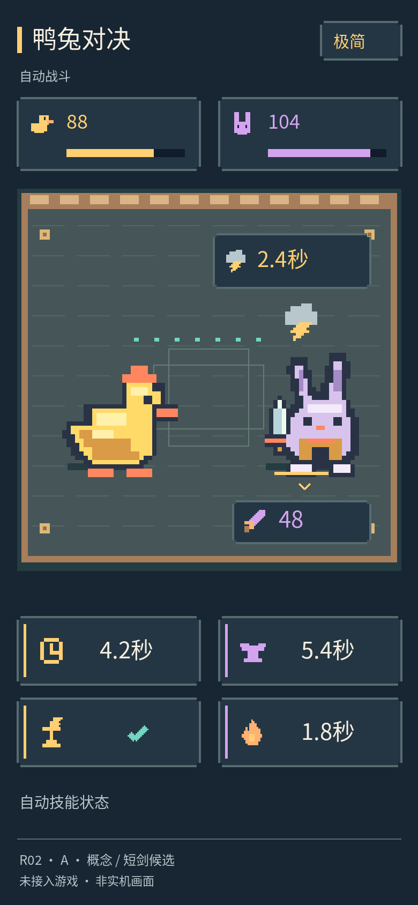
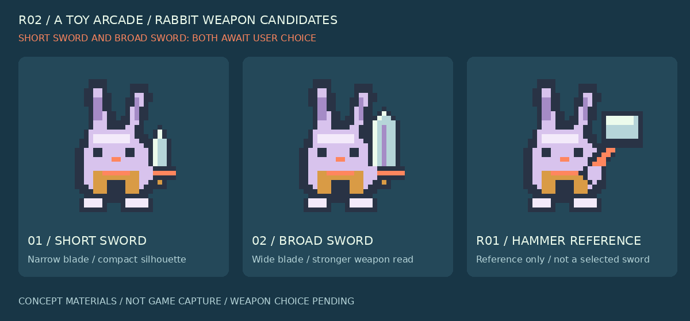

短剑候选
窄刃、较短伸出范围。挥击声短促，命中以刃击质感表达。
待选择A 暖色像素风 · 已选择
第二轮集中解决手机界面的信息密度，以及兔子“拿什么、怎么打、听起来像什么”的一致性。
本轮成果已获准公开评审；未修改游戏。页面点击只用于查看，不会提交选择或启动下一轮。
01 / 四档信息密度
同样的角色位置、血量、倒计时和技能状态。只比较界面信息量；短剑是固定比较样例，不代表已确定武器。

点击图片打开原尺寸 · 概念布局
中文字体与授权核查说明 · 页面采用系统字体；图内字体以 UI 岗位记录为准。图标同时配合形状、必要数字或短标签，不能仅靠颜色传达状态。
02 / 角色设定先统一
短剑与宽剑均为候选。第一轮锤只保留为对照，不自动沿用为最终武器。

窄刃、较短伸出范围。挥击声短促，命中以刃击质感表达。
待选择更宽的阶梯形剑刃与更大护手。挥击更沉，保持剑类声学特征。
待选择用于说明前后差异。锻造敲打可有铁砧声，不代表剑攻击要使用锤击声。
仅对照锻造：工具敲铁砧，使用金属敲打声。攻击：持剑挥击与命中，分别使用破风和刃击声。鸭子不混用金属武器声。
共同角色设定版本：R02-A-characters-0.1。查看可持续扩展的角色设定表。
03 / 按同一版设定，听与看一起比较
视频是概念编排，不是游戏录像。点击播放后才发声；同一时间只播放一段。
完整时序与素材记录 · 实际游戏接触、技能事件与播放绑定仍需接入后验证。
04 / 单独听清楚每一种事件
本轮为程序合成声音，无外部采样。格式与峰值检查不等于人工听评；程序合成或可播放不代表排他权。来源说明 · 事件与播放规则
05 / 目前验证到哪里
角色锚点仍为建议值，武器候选不改变现有碰撞体。团队独立验收报告以实际记录为准。
06 / 留给你的选择
极简、简洁、均衡或详细，也可以指定保留与隐藏的某项信息。
短剑、宽剑，或继续调整。未确认前不会当成最终设定接入。
候选：确定后的动画精修、更多角色设定扩展、手机真机验证，或由点点接入选定方案。
下一周期仅列选项，不自动开工。请在原对话给出选择；本页不提交数据或改变游戏。